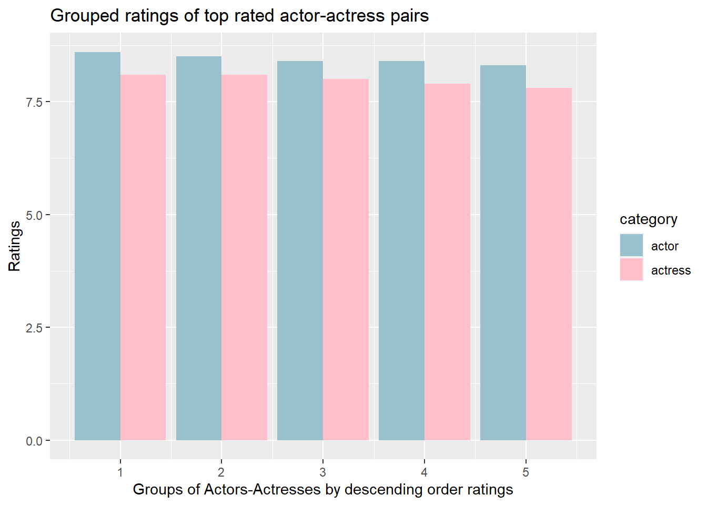
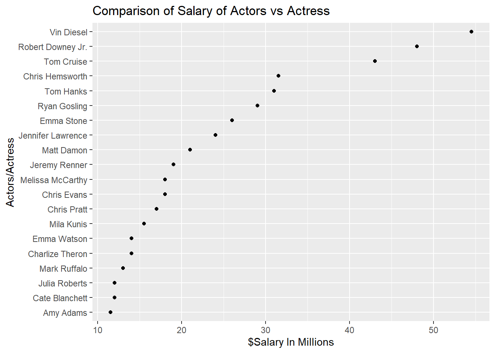
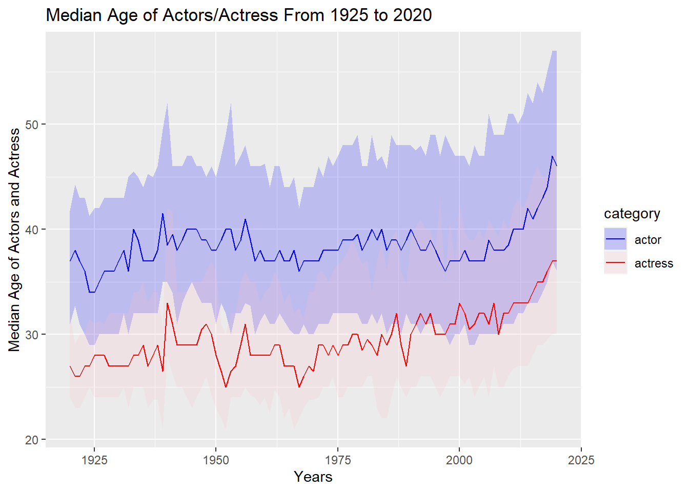

Chapter 5 Results
5.1 Grouped ratings of top rated actor-actress pairs
This graph is a double bar graph that displays the top five ranked actors and actresses (grouped) and their ratings. From this graph you can see that each of the five top rated actors have higher ratings than their female counterparts.

5.2 Comparison of Salary of Actors vs Actress
This Cleveland dot plot shows the top 10 ranked actors and actresses (grouped) and their salaries for 2017. From this graph we can see that 8 out of the 10 top actors had a larger salary than their female counterparts. Also noticeable from this graph is the wage difference of over tens of millions of dollars in many groups where actors made more than actresses. In the two groups where actresses made more money than actors, the wage gap was less than ten million dollars.

5.3 Comparison of Salary of Actors vs Actress
This dot plot shows the top paid actors and actresses and their respective salaries in 2017. We filtered this dataset by the 10 top ranked actors and actresses. From this graph we can see the top paid actor, Vin Diesel, made over 25 million dollars more than the top paid actress, Emma Stone.

5.4 Frequency of movie genres
This graph shows the frequency of genres from the IMDb data. Drama and documentary are the leading genres with comedy as the third most frequent with less than half the value of drama and documentary.
5.5 Mosaic category and genre
From this Mosaic graph, we can see that there is an association between the category (editor, producer, and writer) and genres (action, comedy, and drama) because the number of movies in each category of genres changes depending on the category of the movie professionals.
5.6 Percentage of Genres From 2010 to 2020”
This line graph plots the percentage of genres over years from 2010 to 2020. While most genres remained relatively unchanged during this decade, drama and comedy had a steady decline and incline from 2010 to 2013, respectively. From 2017 to 2019 the reverse percent change.
5.7 Average Ratings Across Different Media
This boxplot shows the average rating across different media types. To our surprise, movies have the lowest median for average ratings while TV episodes have the highest median. While the spread for all media content is large, videos have the largest spread of average ratings.
5.8 Median Age of Actors/Actress From 1925 to 2020
In this graph we plotted the median age of lead actors and actresses from 1920 to 2021. Although the wage gap varies from year to year, the median age of lead actors is almost a decade older than that of actresses throughout all years. Also noticeable from this graph is the slight overall decrease in the wage gap from about 1990 onwards.

5.9 Average Movie Run Time in Minutes From 1920 to 2020
This graph is a plot of average movie run time in minutes against years. From this graph we can see a steady increase in run time from 1920 to 2025. Overall runtime has increased by over 30 minutes from 1920 to 2025. The interesting information here is that the expected average movie run time drops by the year of 2020.
5.10 Movie Run Time Minutes From 1920 to 2020
This boxplot shows movie runtime from 1920 to 2020. Although we already saw runtime increased over time from the line graph above, from the box plots we can see the spread of movie runtime also increased overtime. We can see that the median run time for movies in 1920 is around 70 minutes, and the median run time for movies in 2020 has increased to approximately 90 minutes with maximum run time close to 150 minutes (2.5hours).
5.11 Number of Movies Released By Country
In this choropleth graph we plotted the total number of films released in each country from 1920 to 2020. It is visible from the graph that Canada, United States of America, Mexico, Brazil, Argentina, Western European countries, Russia, India, and Australia have the most film releases overall. Although not very visible from graph, India is the country with the most films released in the world.